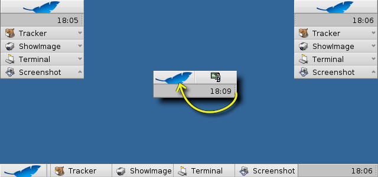
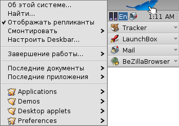
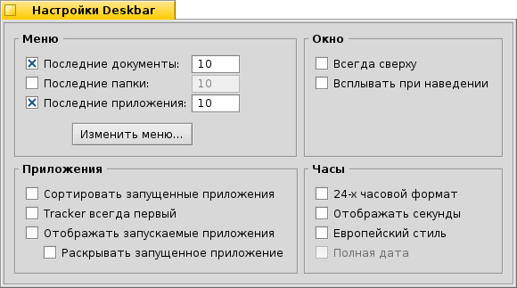

Русский
Русский Français
Français Deutsch
Deutsch Italiano
Italiano Español
Español Svenska
Svenska 日本語
日本語 Українська
Українська 中文 ［中文］
中文 ［中文］ Português
Português English
English| Индексация |
|
Меню Трей Список запущенных приложений |
Deskbar
Deskbar - это маленькая панель, которая по умолчанию располагается в правом верхнем углу экрана. Это аналог панели задач с кнопкой Пуск из Windows. Она содержит меню, из которого Вы можете запустить приложения и настройки, трей с часами и снизу - список запущенных приложений.
Вы можете переместить Deskbar в любой угол, либо расположить на всю верхнюю\нижнюю границу экрана (как в Windows), ухватив за шероховатую область, расположенную слева от трея. Вы также можете свернуть эту панель в более компактную, ухватив за шероховатую область и потянув в сторону меню Deskbar.
 Меню
Меню
Меню раскроется после того, как вы щелкните мышью по верхней области Deskbar:
Об этой системе... - Показывает информацию о системе, лицензиях и проекте Haiku.
Найти... - Открывает диалог запросов.
Отображать репликанты - Активизирует\деактивизирует отображение репликантов.
Подключить - Предлагает те же самые опции, что и меню при правом щелчке мыши по Рабочему столу (для более подробного изучения обратитесь к теме Подключение разделов).
Настроить Deskbar... - Открывает окно с настройками Deskbar (описано ниже).
Завершение работы... - Предлагает опции: и .
Недавние документы, папки, приложения - Список недавно открытых документов, папок и приложений.
Приложения, Демо, Апплеты, Настройки.
Настройки Deskbar

Меню
Здесь вы можете установить количество отображаемых недавно открытых документов, папок и приложений, которые отображаются в меню Deskbar.
Кнопка откроет папку /boot/home/config/be/. В ней вы найдете файлы и папки, которые отображаются в Deskbar, по умолчанию это , , , и .
Вы можете добавить или удалить элементы, такие как ссылки на приложения, документы, папки и даже запросы путем простого копирования или удаления.Есть ещё более простой способ - просто перенесите файл, папку, ссылку на приложений или запрос прямо в Deskbar.
Окно
Deskbar отображается поверх всегда поверх всех окон. Deskbar появляется поверх окон, если указатель мыши коснется его. Приложения
Сортировать список запущенных приложений по алфавиту. Если даже включена сортировка, Tracker будет отображаться первым в списке запущенных приложений. После активации, справа от названия приложения в списке запущенных приложений Deskbar, будет отображаться стрелочка, которая позволяет разворачивать/сворачивать список окон приложения. После запуска автоматически будет раскрываться список окон приложения . Часы
Добавляет к часам отображение секунд.
Трей

Помимо всего прочего в трее располагаются часы. Наведите курсор мыши на часы и вы увидите текущую дату. Левый щелчок мыши по часам вызовет календарь. Правый щелчок мыши по часам вызовет контекстное меню, из которого можно запустить настройку времени, даты и временной зоны.
А также позволит скрыть отображение часов.
Любая программа может установить иконку в трей для обеспечения быстрого доступа. Почтовый клиент, например, отображает другую иконку, когда у Вас есть непрочитанные письма и предлагает контекстное меню, например создание письма для отправки, для проверки почты. Другим примером является Контроллер процессов, использующий иконку в трее, которая отображает нагрузку процессора и использование памяти, а также предлагает контекстное меню.
Список запущенных приложений

Вы можете обратиться к запущенному приложению, нажав на него в списке Deskbar и выбрав любое его окно из подменю. Правым щелчком мыши по приложению в списке вы можете свернуть или закрыть окна приложения, или само приложение.
Если вы активировали отображение экспандеров в настройках Deskbar, то можете разворачивать/сворачивать список окон приложения.
Перед каждым окном приложения находится иконка, которая отображает состояние окна. Светлая иконка означает, что окно развернуто, темная - свернута. Три полоски перед иконкой означают, что окно находится на другом рабочем столе.